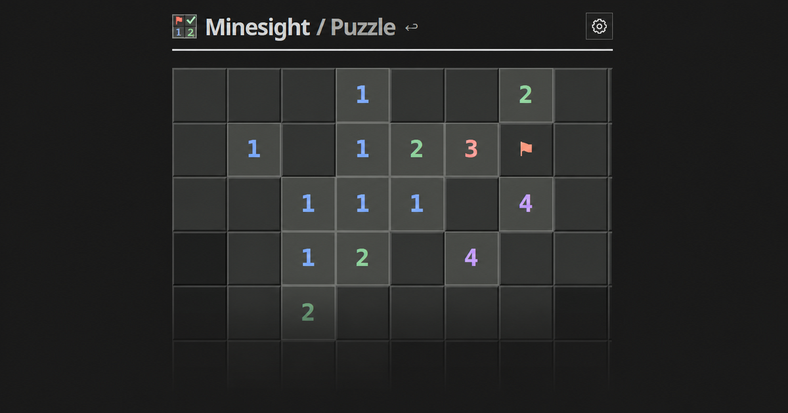

Every square must be proven
Minesight starts where regular Minesweeper gets good. No opening chores. No coin flips. Just a small board and an annoying need to be right.

The best bit of Minesweeper comes late. Most of the empty ground has opened, the flags finally matter, and one stubborn square can be convicted by its neighbours. Minesight begins there. Each 8×8 board arrives partway through the job and asks which covered cells the clues prove safe or mined.
You do not uncover the answer. You write it down. A left-click puts a check mark on a safe cell. A right-click or long press plants a flag. If the clues do not force either answer, keep your hands off. The controls felt familiar after one turn. Left-click still means "safe" and right-click still means "mine." The game asks you to commit before it shows anything new.
The tutorial needs three moves. The third is wrong on purpose. It asks you to tap an uncertain cell, kicks the move back and explains why. I like that. Most puzzle tutorials teach buttons. This one teaches restraint, which is the whole game.
A guess is not a risky move here. It is a category error.
The difficulty is in the reasoning
The five difficulty names undersell how much the puzzles change. Easy gives you open space and familiar patterns. Medium packs the clues together. Hard makes one deduction depend on another. Expert expects proof by contradiction. Then MIT-style drops a thin scattering of clues on the board and insists that they determine every mine. Calling the last one "MIT-style" is a warning label, not a boast.
I spent most of my time in Study. It keeps feeding you boards at the chosen difficulty and tracks a separate streak for each level. A bad deduction resets that streak, complete with the old number tumbling off the screen. The Hint button marks the cells you should be able to prove. Notes opens a freehand layer over the board, useful once Expert has you circling hypothetical mines like a detective who has run out of corkboard.
Daily gives you one puzzle at each difficulty. It also changes the rules of judgment. You can revise the whole board before pressing "Check solution," so a stray click does not spoil the attempt. Finishing all five is less a coffee break than a small evening course in mines. Fortunately, the game records each difficulty on its own.
A small grid with long edges
Challenge queues twelve puzzles and starts a clock. One mistake stains the current puzzle but does not throw away the entire run. Good. A shared link carries the same puzzle seed and your target time, so a friend can race you without making an account. The mode builds all twelve boards up front, and the waiting message sat on my screen long enough for me to notice it. The delay is minor, but it takes some snap out of the Start button.
Then there is Board Lab, which is far more serious than the cheerful name suggests. Paint clues and flags onto an 8×8 grid, press Analyze, and Minesight tells you which cells are forced. It also catches contradictions and checks whether the layout has one solution. Most players will open this once. Puzzle setters may never leave.
Minesight looks like a Sunday puzzle page laid over an old desktop game. The serif headings should clash with the raised grey cells, but they do not. Colored numbers stay readable in both themes. The cells are large enough for a thumb, and the keyboard controls cover the full board. Correct marks make a dry mechanical clack. Solve a puzzle and the game allows itself a little flash of color before getting back to work.
There is no campaign map, achievement drawer or global leaderboard. Your long-term record consists of Study streaks, today's five boxes and the times you send to friends. That will be too spare for anyone who needs a metagame. The Daily labels also squeeze down to tiny type on a phone. I squinted at "MIT-style" more than I solved it.
Minesight takes the five good minutes at the end of a Minesweeper board and makes them the whole game. I kept opening another.